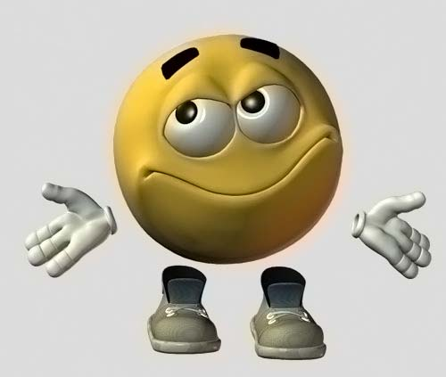

Здравствуйте, дорогие читатели!
Вы зашли на сайт писателя Румита Кина.
Румит Кин – псевдоним и альтерэго для двух авторов: Тимура Денисова и Николая Мурзина.
Общий уклон нашего творчества – фантастический, в широком смысле: в наших произведениях есть элементы мистики, хоррора, городского фэнтези, киберпанка. Но жанр для нас – не главное. Мы стремимся к атмосферности, подробности, психологической убедительности. Наши герои, как правило, дети и подростки. Однако, хотя мы часто пишем про детей, мы не пишем для детей. Наши истории не ориентированы на читательскую аудиторию какого-то определённого возраста. Мы стараемся быть вне политики и других привычных злободневных ориентиров, но у нас есть этическая позиция и мы не любим, когда свободу вымысла ограничивает та или иная идеология.
Сайт был создан осенью 2019 года и с тех пор находится в процессе разработки. Мы делаем его своими руками. К началу 2020 года мы планировали привести все наши произведения в белый вид, сверстать в разных форматах, снабдить иллюстрациями и опубликовать в "Библиотеке". Однако, увы, мы не успели…
Отчасти это была не наша вина, так как нас подвели те художники, с которыми мы вели переговоры. Кроме того сам объём работ оказался слишком велик. А главное, большая часть наших сил сейчас уходит на написание нового романа.
Теперь отчётливого дедлайна нет. Весной 2020 мы планируем доделывать "Библиотеку". Когда она будет готова мы приступим к разработке других разделов сайта. В плане: "Магазин", где можно будет купить наши изданные в бумажном виде книги; "Румипедия" – энциклопедия по нашим историям, персонажам и мирам; "Музыка" – там будут выложены саундтреки Николая, написанные по мотивам нашего творчества; "Блог"; "Друзья и благодарности"; "Ресурсы и контакты".